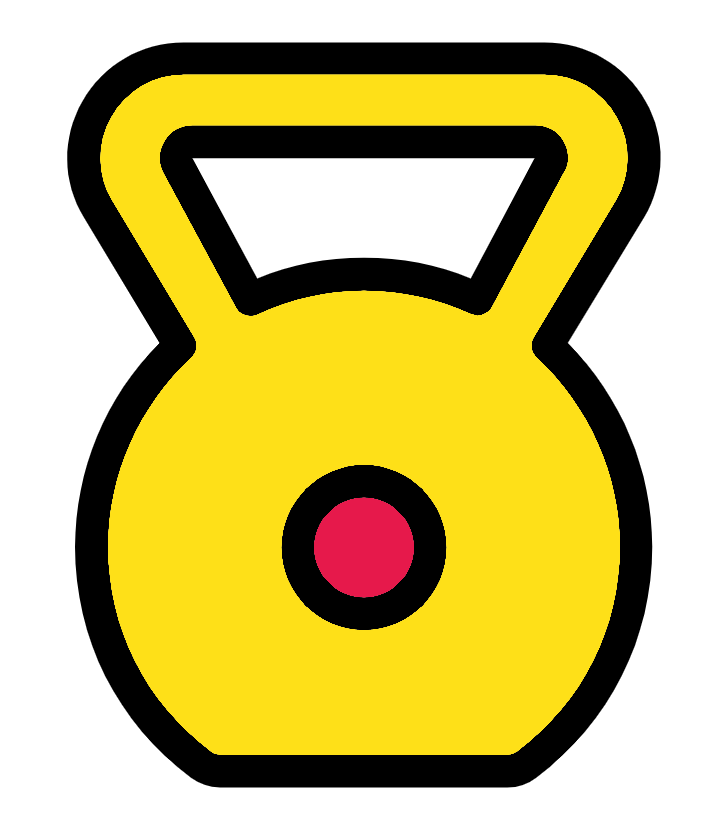

3 Foundations of R exercises
This will be the simplest of the exercises but will be a good opportunity to reinforce what you have learnt. In fact there is no solution section for this as it is unneeded.
The first task is to add the below text annotation to the top of your current script.
# Foundations ####Now save the file as “1-Foundations.R” within the course directory.
For the next part you will need to create a new script and save it as “Exercises.R”.
On the first line of this script type the following annotation:
# Exercise 1 ####The #### creates a code section, these will be explained in a later week. You could also use ---- or ==== at the end of an annotation to create a code section.
The next step is the most tedious, unfortunately tedious repetition is one of the best ways to learn.
Please fill in the “Exercises.R” script with the commands from the operators and variables section from Chapter 2. Additionally, add in annotations so you can easily tell which sections the commands come from and brief lines on their purposes.
Annotations require a balance of enough info but not too much info, you don’t always need a line of annotation for each line of code. However, with some complex code sometimes you will need multiple lines of annotation for one line of code. It is all about how much annotation you and possibly others will need for the code at hand. Knowing this requires experience.
Next save the script, ensuring it is called “Exercises.R””
Finally, close your script by clicking the “x”” icon on the tab of the script.
That is the end of Foundations of R! If you have any questions please ask and we are more than happy to try to answer.